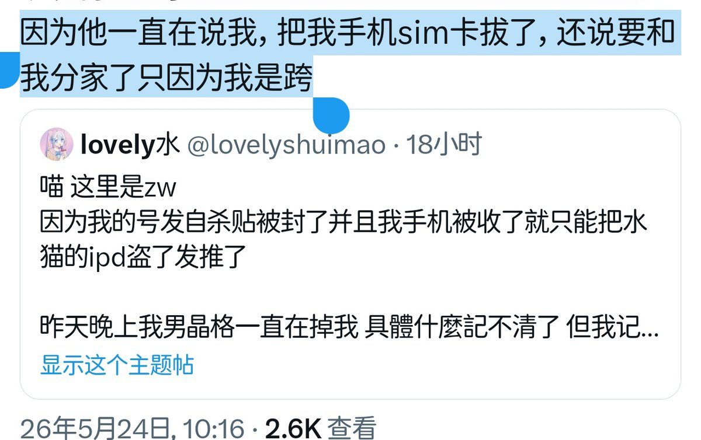

時璃風医詩🌈🏳️🌈
@hagishigure
@SakurabaEma_ITN 唉唉，我希望你们都能仔细的阅读文字。虽然zw应该是asd所以导致我比较容易理解。
首先是图一，拍照着重点没有警察，而根据常识判断，一个人抱怨某件事时写到什么通常和图片有关，图二，警察不可能「一直说」，这个一直是很长的一个时间，也不可能「和我分家」，由此可得，这是生物爹。

英酱猫猫🍥
@SakurabaEma_ITN
@hagishigure 那不应该说清楚是自己父母吗
现在好了，以偏概全神人扣帽子神人乐子神人又来了
又有说跨性别都是极端分子都是精神病都是袭警的了